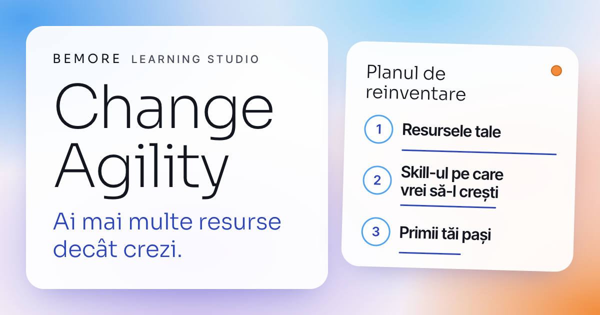
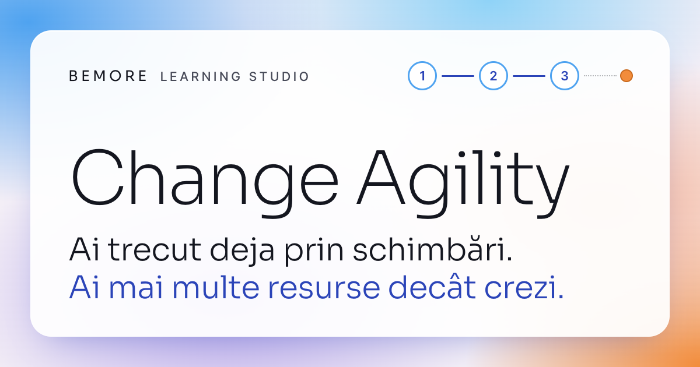
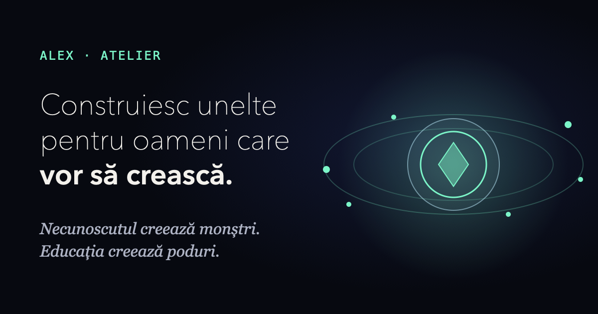

Ce te-a ajutat să treci cu bine printr-o schimbare? …
Change Agility · workshop despre schimbare și reinventarealexandrumolea.com
T-057 · imaginea de previzualizare
Două variante, 1200 × 630, în brandul BEMORE (Lumină, ca pagina). O singură imagine servește toate postările care duc la pagină (A, B și C ale Sofiei), pentru că LinkedIn o ia din pagină, nu din postare. De aceea arată cursul, nu o postare anume. Textul de pe imagini e doar din fraze aprobate de Alex (primul ecran al paginii).

a-planul.png · 1200 × 630 · PNG
Ce te-a ajutat să treci cu bine printr-o schimbare? …

b-resursele.png · 1200 × 630 · PNG
Ce te-a ajutat să treci cu bine printr-o schimbare? …

Fără imagine proprie, linkul arată imaginea generală a site-ului. După ce Mike leagă imaginea aleasă (imagine_linkedin), o verificăm în LinkedIn Post Inspector înainte de postare: LinkedIn ține previzualizarea în cache cam 7 zile.